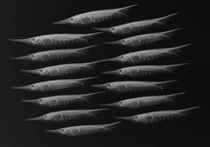
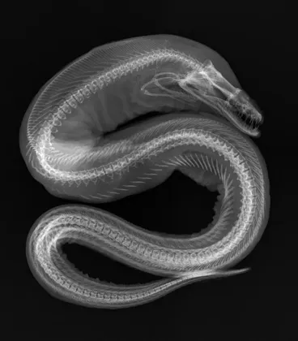
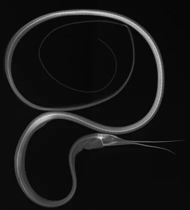

elixir
_theme · iroFactory
Documentación para modelos y pipelines de datos. La señal entra, se entrena y sale; cada nodo queda marcado por la etapa que lo alcanzó.
Paleta y métricas
Tokens disponibles como variables CSS. Cambian con el modo.
Señal de modelo
Paleta analítica
Neutros y semánticos
Métricas
Una métrica, un color: el mismo token que la etapa que la produce.
Pipeline
Las cuatro etapas, lo que pasó en la última corrida y el grafo donde cada pulso deja su color.
Etapas
Extracción de datos
Scraper conectado a la fuente. Validación de esquema en cada registro.
Preprocesamiento
Normalización, tokenización y generación de embeddings.
Entrenamiento del modelo
Clasificador supervisado con validación cruzada de 5 folds.
Evaluación y exportación
Métricas sobre el test set. Exportación a ONNX para inferencia.
Run log
Preprocesamiento completado
2.4M registros normalizados. Sin valores nulos.
Feature engineering
768 dimensiones generadas. Embeddings en caché.
Entrenamiento en curso
Epoch 14/50 · loss 0.021 · mejorando.
Evaluación pendiente
Esperando fin del entrenamiento para correr el test set.
Scraper fallido
Timeout en la fuente. Reintentando con backoff exponencial.



Componentes
Código
Inline: toggleTheme() alterna entre modo claro y oscuro.
# Pipeline de clasificación supervisada
from sklearn.pipeline import Pipeline
from sklearn.preprocessing import LabelEncoder
@dataclass
class Experimento:
nombre: str
epochs: int = 50
lr: float = 1e-4
def entrenar(self, X, y):
modelo = Pipeline([
('enc', LabelEncoder()),
('clf', self._build()),
])
return modelo.fit(X, y) # clasificador listoTabla
| Token | Claro | Oscuro | Semántica |
|---|---|---|---|
--accent | #0A5C58 | #00E8D8 | Acento principal · teal pizarra |
--input | #2A3A7A | #4D8FFF | Dato entrante · validación pendiente |
--train | #0A5C58 | #00E8D8 | Entrenamiento activo · epoch en curso |
--output | #1A5C30 | #00F090 | Predicción lista · resultado validado |
--teal | #0A5C58 | #00E8D8 | Scraper activo · conexión |
--indigo | #2A3A7A | #4D8FFF | Modelo base · checkpoint |
--pine | #1A5C30 | #00F090 | Verde pizarra · clasificación OK |
--violet | #3A2A6A | #8060FF | Experimental · embeddings |
--arctic | #1A4A6A | #00C8FF | Stream frío · batch diferido |
Callouts
Documentación del pipeline, notas de implementación y referencias.
Predicción validada. Métrica dentro del umbral esperado.
Overfitting detectado. Revisar regularización antes de continuar.
Datos corruptos en el batch. Pipeline detenido.
Datos crudos entrando al pipeline. Validación de esquema pendiente.
Entrenamiento activo. Epoch 14/50 · loss decreciendo.
Predicción lista. Confianza 94.3% sobre la clase objetivo.
Modelo base cargado. Pesos inicializados desde checkpoint.
Feature experimental. Embeddings de segunda generación en prueba.
Stream de datos frío. Procesamiento en batch diferido.
Notas de contexto. Información secundaria del experimento.
Badges
Botones
Cards
Modelo de texto entrenado sobre corpus multilingüe. 94.3% accuracy en test.
Extracción concurrente con rate limiting configurable y retry automático.